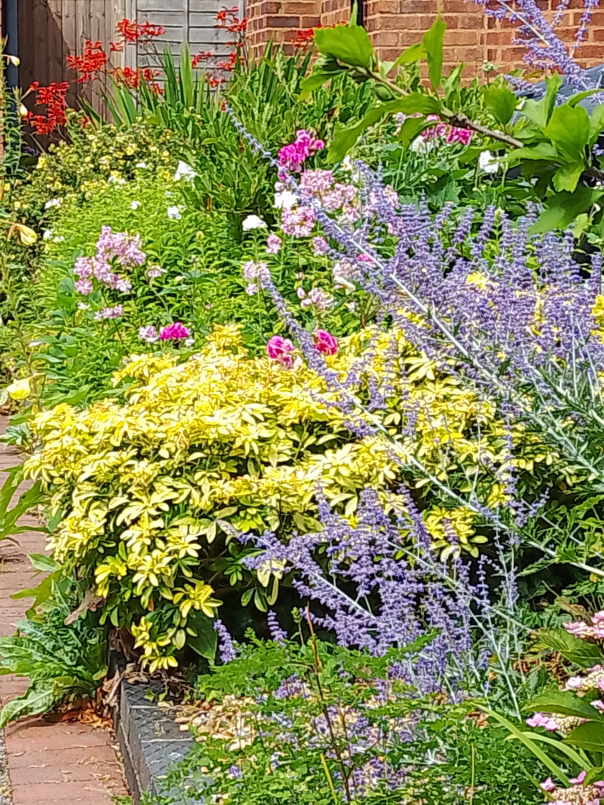

Mow & More
Helping you enjoy the garden without the hard work!
"Hi, I'm Bob, welcome to Mow & More. I provide reliable, friendly and trustworthy gardening and outdoor maintenance services in Solihull. Whether you're looking for regular help or just need a one-off tidy-up, I'm here to make life a little easier and your home look its best."
What I can offer...
- Weeding & General Garden Maintenance: Let me take care of the hard work so you can enjoy your garden.
- Lawn Mowing: Regular or one-off grass cutting to keep your lawn looking neat and tidy.
- Hedge Trimming: Shaping and tidying hedges to keep them healthy and under control.
- Patio & Drive Pressure Washing: Remove built-up dirt and bring back the sparkle to your outdoor spaces.
All services are available regularly, occasionally, or just when you need an extra pair of hands—such as before a garden party, while you're away on holiday, or when you're preparing to sell your home.



Why choose Mow & More?
- Friendly & Local: One-person business with a personal touch
- Trustworthy & Dependable: Many happy, long-term customers
- Goes the Extra Mile: I treat every job like it's my own home
- Flexible Service: No job too small, and schedules to suit you
Services

Lawn Mowing
Enjoy a perfectly mown lawn with 'Wimbledon-quality' stripes without the hassle. Grass cuttings are removed as standard. In addition I can offer:
- Re-turfing or reseeding damaged lawns.
- Edge strimming
- Pre- and post-season lawn treatments

Weeding & more
From perennial border weeding to pots and hanging baskets of seasonal flowers, I'm here to help you maintain the garden just the way you want it! I can also help with:
- Fence and wood care.
- Erecting outdoor festive decorations & lighting.

Hedge trimming
Keeping your green boundaries neat and shapely, I have the profressional tools for the job. As well as hedge trimming, I can offer:
- Simple topiary designs.
- Rose and shrub pruning.
- Garden waste removal.

Patios & drives
With a professional 18 bar pressure washer, your hard surfaces will not only look as good as new, but will also be safer, free from slippy greens. In addition I can offer:
- Between slab weed control.
- Grout touch-up or replacing.
- Repair broken pavers.